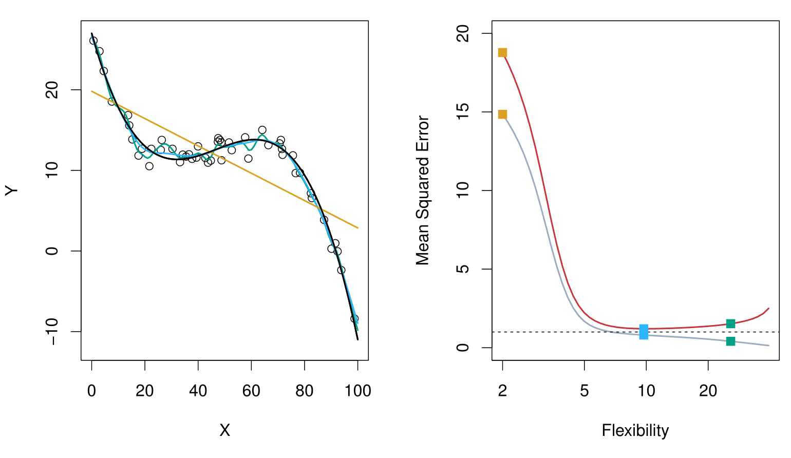

MGMT 47400: Predictive Analytics
Syllabus, Logistics, and Introduction
Instructor’s Passions

How to Estimate \(f\)
Often, we lack sufficient data points for exact computation of \(E(Y|X=x)\).
So, we relax the definition:
\[ \hat{f}(x) = \text{Ave}(Y|X \in \mathcal{N}(x)) \]
where \(\mathcal{N}(x)\) is a neighborhood of \(x\).

Comparison of Models
\[ \hat{f}_L(X) = \hat{\beta}_0 + \hat{\beta}_1X \]

The linear model gives a reasonable fit here.
\[ \hat{f}_Q(X) = \hat{\beta}_0 + \hat{\beta}_1X + \hat{\beta}_2X^2 \]

Quadratic models may fit slightly better than linear models in some cases.
Linear Regression Fit
Linear regression model fit to the simulated data:

\[ \hat{f}_L(\text{education}, \text{seniority}) = \hat{\beta}_0 + \hat{\beta}_1 \times \text{education} + \hat{\beta}_2 \times \text{seniority} \]
Flexible Regression Model Fit
More flexible regression model \(\hat{f}_S(\text{education}, \text{seniority})\) fit to the simulated data.

Here we use a technique called a thin-plate spline to fit a flexible surface. We control the roughness of the fit.
Overfitting
Even more flexible spline regression model \(\hat{f}_S(\text{education}, \text{seniority})\) fit to the simulated data. We tunned the parameter all the way down to zero and this surface actually goes through every single data point.

The fitted model makes no errors on the training data! This is known as overfitting.
Flexibility vs. Interpretability
Trade-offs between flexibility and interpretability:

- High interpretability: Subset selection, Lasso.
- Intermediate: Least squares, Generalized Additive Models, Trees.
- High flexibility: Support Vector Machines, Deep Learning.
Bias-Variance Trade-off: Other Examples
Here, the truth is smoother, so smoother fits and linear models perform well.

Here, the truth is wiggly and the noise is low. More flexible fits perform the best.

Ideal Classifier and Bayes Decision Rule

Consider a classification problem with \(K\) possible classes, numbered \(1, 2, \ldots, K\). Define
\[ p_k(x) = \Pr(Y = k \mid X = x), \quad k = 1, 2, \ldots, K. \]
These are the conditional class probabilities at \(x\); e.g. see little barplot at \(x=5\).
The Bayes optimal classifier at \(x\) is
\[ C(x) \;=\; j \quad \text{if} \quad p_j(x) = \max \{\,p_1(x),\, p_2(x),\, \dots,\, p_K(x)\}. \]
Nearest-Neighbor Averaging

Nearest-neighbor averaging can be used as before.
Also breaks down as dimension grows. However, the impact on \(\hat{C}(x)\)is less than on \(\hat{p}_k(x)\), for \(k = 1,\ldots,K\).
KNN: K = 10
Here is the same data set classified by k-nearest neighbors with \(k = 10\). The black boundary line encloses the region of the feature space predicted as orange vs. blue, showing how the decision boundary has become smoother.

KNN: K = 1 vs. K = 100

Comparisons of a very low value of \(k\) (left, \(k=1\)) versus a very high value (right, \(k=100\)).
\(k=1\): Overly flexible boundary that can overfit.
\(k=100\): Very smooth boundary that can underfit.
KNN Error Rates

The figure illustrates how training errors (blue curve) and test errors (orange curve) change for a K-nearest neighbors (KNN) classifier as \(\frac{1}{K}\) varies.
For small \(K\) (i.e., large \(\frac{1}{K}\)), the model can become very flexible, often driving down training error but increasing overfitting and thus test error.
For large \(K\) (i.e., small \(\frac{1}{K}\)), the model becomes smoother, which can help avoid overfitting but sometimes leads to underfitting.
The dashed horizontal line is the bayes error, used as reference for comparison.